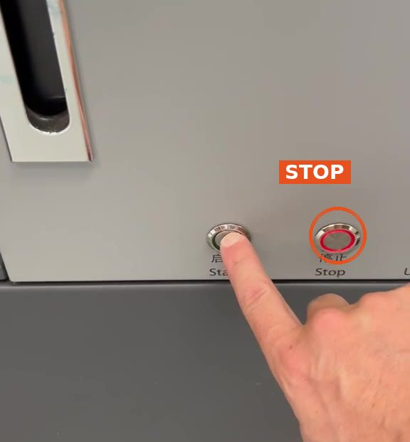

1
Switch off the printer
- Press the STOP button: the one with the red light around it, next to the machine door.

At the end of the day. For this printer it is simple: switch off and tidy up.

Then tidy up everything around the printer completely. The next person must be able to start straight away.